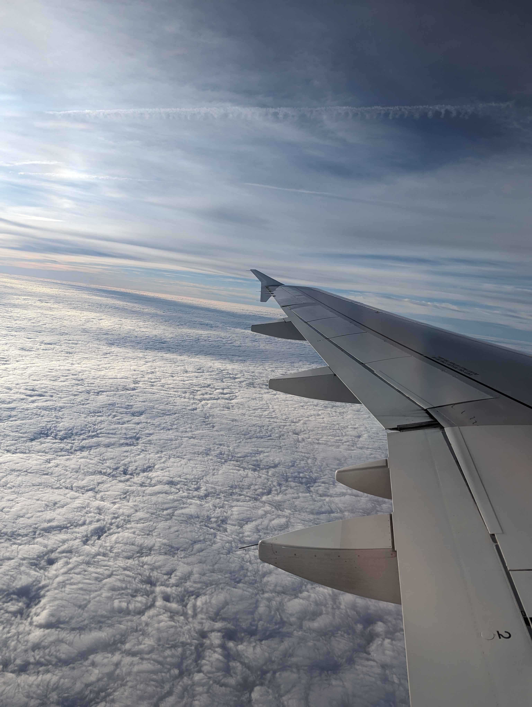

Bienvenue sur mon blog dédié à mon sejour Erasmus en Finlande
!
De janvier à mai 2024, j'ai eu l'opportunité incroyable de
partir en Finlande dans le cadre du programme Erasmus pour
approfondir mes études. Ce blog est une façon de partager mon
expérience, mes découvertes et mes aventures au cours de ces
quelques mois.
Pendant mon séjour, j'ai suivi des cours variés, alliant
l'informatique, la gestion et même la culture locale. Parmi
eux, des sujets tels que la programmation en C++ et orientée
objet, la gestion de projet logiciel, l'introduction à
l'intelligence artificielle, ainsi qu'un cours fascinant sur
la langue et la culture finlandaise. Ces cours m'ont permis
d'élargir mes compétences tout en explorant un nouveau pays.
Dans les prochaines pages, vous trouverez des récits détaillés
de mon quotidien, des photos des paysages nordiques et
quelques conseils si vous envisagez de faire un Erasmus en
Finlande. J'espère que cela vous inspirera à voyager et à
découvrir de nouveaux horizons !
Remise en contexte
Dans le cadre de mes études d'ingénieur en informatique, numérique
et réseaux, j'ai eu la chance de participer à un programme
Erasmus. Deux opportunités s'offraient à moi : un voyage en
troisième année dans un pays européen avec des cours en anglais,
et un autre en cinquième année dans un pays hispanophone
correspondant à ma LV2. Ce blog se concentre exclusivement sur mon
expérience lors de mon premier voyage Erasmus, au semestre 6.
Dès septembre 2023, nous avons pu choisir trois destinations parmi
plusieurs dizaines proposées. J'ai opté pour trois villes :
Seinäjoki en Finlande, Łódź en Pologne, et Utrecht aux Pays-Bas.
Le 11 octobre 2023, j'ai eu la confirmation : ma destination
principale serait Seinäjoki. Ce fut une excellente nouvelle,
d'autant plus que deux étudiants de quatrième année, membres de
l'association Innov'Lab, y étaient partis l'année précédente. Ils
ont été une ressource précieuse pour me donner des conseils sur
les transports, les logements, et la vie étudiante là-bas.
À travers ce blog, je vais partager avec vous mes découvertes, mes
anecdotes et mes aventures vécues lors de ces quatre mois
incroyables en Finlande. Que vous soyez futur étudiant Erasmus,
passionné par le voyage, ou simplement curieux de connaître la vie
en Scandinavie, j'espère que mon expérience pourra vous inspirer
et vous offrir un aperçu de ce qu'est la vie étudiante dans ce
magnifique pays nordique.
Le départ et l'arrivée

Mon aventure en Finlande a commencé par un long voyage. Nous
avions prévu de partir de Paris le 3 janvier au soir avec un vol à
19h. Après environ trois heures de vol, nous sommes arrivés à
Helsinki à 23h (en prenant en compte le changement d'horaire). Les
trains en Finlande commencent à circuler vers 6h-7h du matin et
terminent vers 23h. Nous avions donc décidé de passer la nuit à
l'aéroport d’Helsinki afin de prendre un train pour Seinäjoki le
matin suivant. Bien que ce choix fût difficile (attendre à
l’aéroport et dormir sur des bancs inconfortables), il était tout
de même économique. En effet, la différence de prix entre un
trajet en journée et un trajet de nuit était considérable, pouvant
aller du simple au triple.
Le 4 janvier au matin, nous avons pris le train à 7h pour un
trajet de trois heures, arrivant à Seinäjoki à 10h. C’était notre
première rencontre avec le froid finlandais : -30°C, un choc
immédiat ! À notre arrivée, nous devions récupérer les clés de nos
appartements à l’agence SEVAS Kodit, mais le réseau de bus de la
ville ne fonctionnait pas à cause des températures extrêmes. Nous
avons donc dû marcher une dizaine de minutes jusqu'à l'agence,
puis une autre dizaine de minutes pour rejoindre nos logements à
Puskantie 38, le tout avec nos valises (dont une était cassée),
sous un froid glacial. C’était notre premier test de résistance au
climat finlandais.
Une fois arrivés dans nos appartements, chacun de nous a pu
déposer ses affaires et se reposer un peu. Mais la journée ne
faisait que commencer : nous avons décidé de nous retrouver
rapidement pour explorer notre nouvelle ville et commencer à
organiser notre quotidien.
Les voyages pendant le séjour
Dès les premiers jours, j'avais déjà la volonté de voyager et de
visiter la Finlande, ainsi que la Laponie. Très tôt, j'ai pris la
décision de commencer à préparer mon voyage. En consultant
l'emploi du temps, j'ai découvert que vers la fin janvier et début
février, il y avait presque deux semaines de vacances avec
seulement un cours entre les deux. J'ai donc organisé deux voyages
: l'un en Laponie au village du Père Noël et l'autre en France
pour revoir ma copine et me reposer un peu. Autant dire que
j'avais un programme très chargé durant ces quelques jours !
Le vendredi 26 janvier, juste après mes cours du matin, je suis
parti à 13h10 en train en direction d'Oulu, une très jolie ville
en bord de mer, proche de la frontière avec la Laponie. J'y suis
arrivé à 15h45 et avais réservé une chambre dans une maison
commune avec d'autres voyageur. Pour me restaurer, j'ai choisi
Luckiefun's, une chaîne de restauration japonaise très connue en
Finlande. J'ai passé le reste de la journée à visiter la ville, à
découvrir des magasins et à discuter avec les habitants pour avoir
un aperçu de leur quotidien et de leur point de vue sur la vie en
Finlande.
Le lendemain, je suis parti vers Rovaniemi, la ville officielle du
Père Noël. J'ai pris mon train à 12h30 et suis arrivé à 14h40.
J'avais réservé un Airbnb, très joli et peu cher, mais j'ai
rapidement compris pourquoi il était si abordable. En effet,
l'appartement était situé à 45 minutes de marche de la gare et à
30 minutes du centre-ville, sans être desservi par les bus. J'ai
donc dû marcher tout ce chemin avec ma valise avant de
m'installer.
Mon séjour à Rovaniemi était incroyable. J'ai découvert énormément
de choses, allant de l'Arktikum, un musée et centre scientifique
dédié à l'Arctique, au célèbre village du Père Noël. L'Arktikum
propose des expositions sur l'histoire, la culture et
l'environnement de la région arctique, avec une large section sur
les aurores boréales et australes, ainsi que sur les Samis, les
habitants de la Laponie. Le bâtiment en lui-même est une œuvre
architecturale avec sa grande galerie en verre qui offre une vue
magnifique sur les paysages arctiques.
En tant qu'amateur de cuisine asiatique, je ne pouvais pas manquer
l'occasion de dîner dans un restaurant qui mélangeait sushis et
cuisine locale. Cette réservation fut l'une des meilleures
décisions que j'ai prises durant mon séjour. Le repas a commencé
par des sushis au saumon et à la viande de renne, suivi de ramen à
la viande de renne comme plat principal. Pour le dessert, j'ai
goûté une glace à l'épicéa accompagnée d'une liqueur d'Umeshu, une
spécialité japonaise. Ce fut probablement l'une des meilleures
soirées de mon voyage.
Ma visite au village du Père Noël a été tout aussi mémorable. J'ai
rencontré les mascottes de l'attraction et même le Père Noël en
personne ! Même si je n'ai pas pu profiter des attractions (car je
voulais visiter le village de nuit, mais le parc fermait à 19h),
j'ai pu admirer la ligne polaire qui traverse le village et
discuter avec le Père Noël. Fait amusant : lui et ses lutins
parlent couramment français ! Mais quand on y pense, ce n'est pas
si surprenant pour quelqu'un qui doit faire le tour du monde en
une seule nuit.
Malheureusement, j'ai dû quitter Rovaniemi le 30 janvier vers 13h
pour rentrer à Seinäjoki, où je suis arrivé aux alentours de
18h30. J'ai assisté à mon cours du matin le 31 janvier, puis je
suis parti à 13h45 pour Helsinki afin de prendre mon vol vers
Beauvais à 18h50. J'avais également réservé une nuit à l'hôtel à
Beauvais. Le lendemain, je me suis levé tôt, quittant l'hôtel à 5h
du matin pour prendre un TER à 5h15 en direction de Paris Gare du
Nord, suivi d'un métro pour Paris Montparnasse et d'un TGV vers
Angers, où je suis arrivé aux alentours de 9h30. J'ai ensuite pris
un bus pour rentrer à Beaufort-en-Anjou et retrouver enfin ma
copine et mes chats.
Heureusement, mes prochains cours en Finlande ne reprenaient que
le 7 février, ce qui m'a permis de profiter de cinq jours de repos
bien mérités chez moi.
Cours et apprentissages
Mon semestre en Finlande n’a pas été uniquement une aventure
personnelle et culturelle, mais aussi une occasion unique de
renforcer mes compétences académiques et techniques. Le programme
Erasmus à Seinäjoki m’a permis de suivre des cours dans des
domaines variés, mêlant informatique, gestion et même découverte
de la langue et de la culture finlandaise. Ce mélange de matières
techniques et culturelles a enrichi mon parcours et a apporté une
nouvelle perspective à ma formation d'ingénieur.
Les cours techniques
L'un des aspects les plus marquants de mon séjour a été la
possibilité de suivre des cours techniques qui m'ont véritablement
aidé à approfondir mes compétences en programmation et en systèmes
embarqués. Parmi les cours les plus enrichissants, je retiens
particulièrement :
- Programmation en C++ : Ce cours m'a permis
de consolider mes bases en programmation avec ce langage
puissant, en travaillant sur des concepts avancés comme la
gestion de la mémoire, les pointeurs et les structures de
données complexes.
- Programmation orientée objet : Cette matière
a approfondi mes connaissances sur les paradigmes de la
programmation orientée objet, en se concentrant sur des concepts
comme l'héritage, le polymorphisme et la modularité, des notions
essentielles pour concevoir des logiciels robustes et
maintenables.
- Introduction à l'intelligence artificielle (IA)
: Ce cours a été particulièrement intéressant, car il a couvert
des sujets clés de l'IA comme les réseaux neuronaux, les
algorithmes d'apprentissage automatique et l'application de ces
concepts à des problématiques réelles. Il m'a également permis
d'avoir une vue d'ensemble des défis et des opportunités offerts
par l'IA dans les secteurs industriels et technologiques.
- Systèmes embarqués : Dans ce cours, j'ai
appris à programmer des microcontrôleurs et à gérer des systèmes
matériels et logiciels intégrés. Ce fut un excellent complément
à mes compétences en IoT, notamment dans l'utilisation des ESP32
et autres systèmes connectés.
Les projets de groupe
En parallèle des cours théoriques, j'ai également participé à un
projet logiciel où nous avons travaillé en équipe sur la
conception et le développement d'une application. Ce projet nous a
permis de mettre en pratique les compétences acquises en
programmation et gestion de projet tout en nous confrontant aux
défis réels que peuvent rencontrer les équipes de développement
dans un environnement international.
Cours de management et de langue
Outre les matières purement techniques, j’ai également eu
l’opportunité de suivre des cours qui développaient mes
compétences dans d’autres domaines, essentiels pour un ingénieur :
- Management des opérations : Ce cours m’a
permis de mieux comprendre les concepts de gestion de la
production et des opérations au sein d’une organisation, ce qui
est crucial pour toute entreprise qui cherche à optimiser ses
processus et à réduire les coûts.
- Anglais technique : Même si je maîtrise bien
l'anglais, ce cours m'a permis d'améliorer mes compétences dans
un cadre plus professionnel, en me familiarisant avec des termes
techniques utilisés dans le milieu de l'informatique et de
l’ingénierie.
- Langue et culture finlandaise : J'ai
également pris un cours de finnois, ce qui m’a permis d’acquérir
des notions de base dans cette langue complexe et fascinante. Ce
fut aussi une excellente introduction à la culture locale, me
permettant de mieux comprendre les traditions et les coutumes du
pays.
Un apprentissage global
En plus des compétences techniques acquises, étudier dans un
environnement international a été une expérience particulièrement
enrichissante. Le fait de côtoyer des étudiants de différents pays
et cultures m’a permis de développer mes compétences en travail
d’équipe et en communication interculturelle, deux qualités
essentielles dans un monde de plus en plus globalisé.
Globalement, ce semestre m'a apporté une vision nouvelle de ma
formation d'ingénieur, en élargissant mon champ de compétences et
en m'offrant des perspectives nouvelles sur la façon d'aborder les
projets et les problèmes techniques. Mon passage en Finlande a
renforcé mon envie de continuer à me former et à explorer les
nouvelles technologies, tout en restant ouvert aux autres cultures
et façons de penser.
Conclusion
Mon semestre Erasmus en Finlande a été une expérience
véritablement enrichissante à bien des égards. Non seulement, il
m’a permis de découvrir un nouveau pays, une culture fascinante,
et de rencontrer des personnes venues des quatre coins du monde,
mais il m'a aussi offert l'opportunité de renforcer mes
compétences académiques et professionnelles. Les cours variés que
j'ai suivis, de la programmation à la gestion de projet, en
passant par l'introduction à l'intelligence artificielle et aux
systèmes embarqués, ont solidifié ma formation d’ingénieur et
ouvert de nouvelles perspectives dans le domaine de la
technologie.
En dehors du cadre académique, ce séjour m'a permis de sortir de
ma zone de confort, que ce soit en affrontant les défis d'un
climat rigoureux ou en apprenant à communiquer avec des personnes
venant de milieux très différents. Les voyages que j'ai entrepris,
notamment en Laponie, ont aussi ajouté une dimension unique à
cette aventure, en me permettant de découvrir des paysages à
couper le souffle et d'approfondir ma connaissance de la culture
locale.
Ce séjour m'a également fait prendre conscience de l’importance
des compétences interculturelles et du travail en équipe dans un
monde de plus en plus globalisé. Travailler avec des étudiants de
différentes nationalités m'a permis de mieux comprendre les enjeux
de la communication internationale et de la collaboration dans des
contextes variés.
En somme, cette expérience en Finlande a été bien plus qu’un
simple échange universitaire : elle m’a transformé personnellement
et professionnellement, en me poussant à développer de nouvelles
compétences, à explorer de nouveaux horizons et à embrasser une
ouverture d'esprit encore plus grande. Ce voyage a renforcé ma
passion pour l'ingénierie et m'a donné l'envie de poursuivre mes
études en explorant encore davantage le monde de la technologie
tout en restant connecté à différentes cultures.
Si vous avez l’opportunité de partir en Erasmus ou de voyager à
l’étranger pour vos études, je vous encourage vivement à saisir
cette chance. C’est une expérience qui change véritablement la
façon dont vous voyez le monde, vos études, et même votre futur.